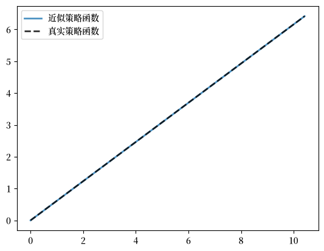

69. 最优储蓄 V：内生网格法#
除了 Anaconda 中已有的库之外，本讲座还需要以下库：
!pip install quantecon
69.1. 概述#
之前，我们使用以下方法求解了最优储蓄问题：
我们发现时间迭代明显更加精确和高效。
在本讲座中，我们将探讨一种巧妙的时间迭代变体，称为内生网格法（EGM）。
EGM 是一种用于实现策略迭代的数值方法，由 Chris Carroll 发明。
原始参考文献是 [Carroll, 2006]。
现在我们将专注于一个简洁且贴近底层数学的 EGM 实现。
然后，在 最优储蓄 VI：使用 JAX 的 EGM 中，我们将基于 JAX 构建一个完全向量化和并行化的 EGM 版本。
让我们从一些标准导入开始：
import matplotlib.pyplot as plt
import numpy as np
import quantecon as qe
import matplotlib as mpl # i18n
FONTPATH = "fonts/SourceHanSerifSC-SemiBold.otf" # i18n
mpl.font_manager.fontManager.addfont(FONTPATH) # i18n
mpl.rcParams['font.family'] = ['Source Han Serif SC'] # i18n
69.2. 核心思想#
首先我们回顾一下理论，然后转向数值方法。
69.2.1. 理论#
我们使用 最优储蓄 IV：时间迭代 中提出的模型，遵循相同的术语和记号。
正如我们所见，Coleman-Reffett 算子是一个非线性算子 \(K\)，其设计使得最优策略 \(\sigma^*\) 是 \(K\) 的一个不动点。
它以一个连续严格递增的消费策略 \(\sigma \in \Sigma\) 作为参数。
它返回一个新函数 \(K \sigma\)，其中 \((K \sigma)(x)\) 是求解以下方程的 \(c \in (0, \infty)\)：
69.2.2. 外生网格#
正如 最优储蓄 IV：时间迭代 中所讨论的，为了在计算机上实现该方法，我们通过有限网格上的一组值来表示策略函数。
在必要时，通过插值或其他方法从这个表示中重构函数本身。
我们之前在 最优储蓄 IV：时间迭代 中获取更新后的消费策略的有限表示的策略是：
固定一个收入点网格 \(\{x_i\}\)
使用 (69.1) 和求根程序计算对应于每个 \(x_i\) 的消费值 \(c_i\)
然后将每个 \(c_i\) 解释为函数 \(K \sigma\) 在 \(x_i\) 处的值。
因此，有了 \(\{(x_i, c_i)\}\) 这些点对，我们就可以通过近似来重构 \(K \sigma\)。
然后迭代继续……
69.2.3. 内生网格#
上面讨论的方法需要一个求根程序来找到对应于给定收入值 \(x_i\) 的 \(c_i\)。
求根的代价很高，因为它通常涉及大量的函数求值。
正如 Carroll [Carroll, 2006] 所指出的，如果 \(x_i\) 是内生选择的，我们就可以避免这一步骤。
唯一需要的假设是 \(u'\) 在 \((0, \infty)\) 上可逆。
设 \((u')^{-1}\) 为 \(u'\) 的反函数。
思路如下：
首先，我们为储蓄（\(s = x - c\)）固定一个外生网格 \(\{s_i\}\)。
然后我们通过以下方式获得 \(c_i\)：
最后，对于每个 \(c_i\)，我们设 \(x_i = c_i + s_i\)。
重要的是，以这种方式构造的每个 \((x_i, c_i)\) 点对都满足 (69.1)。
有了 \(\{x_i, c_i\}\) 这些点后，我们可以像之前一样通过近似来重构 \(K \sigma\)。
EGM 这个名称源于网格 \(\{x_i\}\) 是内生确定的这一事实。
69.3. 实现#
与 最优储蓄 IV：时间迭代 中一样，我们将从一个简单的设定开始，其中
\(u(c) = \ln c\)，
函数 \(f\) 具有科布-道格拉斯形式，并且
冲击是对数正态的。
这将使我们能够与解析解进行比较。
def v_star(x, α, β, μ):
"""
真实价值函数
"""
c1 = np.log(1 - α * β) / (1 - β)
c2 = (μ + α * np.log(α * β)) / (1 - α)
c3 = 1 / (1 - β)
c4 = 1 / (1 - α * β)
return c1 + c2 * (c3 - c4) + c4 * np.log(x)
def σ_star(x, α, β):
"""
真实最优策略
"""
return (1 - α * β) * x
我们重用 最优储蓄 IV：时间迭代 中的 Model 结构。
from typing import NamedTuple, Callable
class Model(NamedTuple):
u: Callable # 效用函数
f: Callable # 生产函数
β: float # 贴现因子
μ: float # 冲击位置参数
ν: float # 冲击尺度参数
s_grid: np.ndarray # 外生储蓄网格
shocks: np.ndarray # 冲击抽样
α: float # 生产函数参数
u_prime: Callable # 效用的导数
f_prime: Callable # 生产的导数
u_prime_inv: Callable # u_prime 的逆
def create_model(
u: Callable,
f: Callable,
β: float = 0.96,
μ: float = 0.0,
ν: float = 0.1,
grid_max: float = 4.0,
grid_size: int = 120,
shock_size: int = 250,
seed: int = 1234,
α: float = 0.4,
u_prime: Callable = None,
f_prime: Callable = None,
u_prime_inv: Callable = None
) -> Model:
"""
创建最优储蓄模型的一个实例。
"""
# 设置外生储蓄网格
s_grid = np.linspace(1e-4, grid_max, grid_size)
# 存储冲击（带种子，使结果可复现）
rng = np.random.default_rng(seed)
shocks = np.exp(μ + ν * rng.standard_normal(shock_size))
return Model(
u, f, β, μ, ν, s_grid, shocks, α, u_prime, f_prime, u_prime_inv
)
69.3.1. 算子#
这是使用上述 EGM 的 \(K\) 的一个实现。
def K(
c_in: np.ndarray, # 内生网格上的消费值
x_in: np.ndarray, # 当前内生网格
model: Model # 模型设定
):
"""
使用 EGM 的 Coleman-Reffett 算子的一个实现。
"""
# 简化名称
u, f, β, μ, ν, s_grid, shocks, α, u_prime, f_prime, u_prime_inv = model
# 在内生网格上对策略进行线性插值
σ = lambda x: np.interp(x, x_in, c_in)
# 为新的消费数组分配内存
c_out = np.empty_like(s_grid)
for i, s in enumerate(s_grid):
# 近似边际效用 ∫ u'(σ(f(s, α)z)) f'(s, α) z ϕ(z)dz
vals = u_prime(σ(f(s, α) * shocks)) * f_prime(s, α) * shocks
mu = np.mean(vals)
# 计算消费
c_out[i] = u_prime_inv(β * mu)
# 确定对应的内生网格
x_out = s_grid + c_out # x_i = s_i + c_i
return c_out, x_out
注意这里没有任何求根算法。
69.3.2. 测试#
首先我们创建一个实例。
# 定义带导数的效用函数和生产函数
u = lambda c: np.log(c)
u_prime = lambda c: 1 / c
u_prime_inv = lambda x: 1 / x
f = lambda k, α: k**α
f_prime = lambda k, α: α * k**(α - 1)
model = create_model(u=u, f=f, u_prime=u_prime,
f_prime=f_prime, u_prime_inv=u_prime_inv)
s_grid = model.s_grid
这是我们的求解程序：
def solve_model_time_iter(
model: Model, # 模型细节
c_init: np.ndarray, # EG 上消费的初始猜测
x_init: np.ndarray, # 内生网格的初始猜测
tol: float = 1e-5, # 误差容限
max_iter: int = 1000, # K 的最大迭代次数
verbose: bool = True # 若为 true 则打印输出
):
"""
使用带 EGM 的时间迭代求解模型。
"""
c, x = c_init, x_init
error = tol + 1
i = 0
while error > tol and i < max_iter:
c_new, x_new = K(c, x, model)
error = np.max(np.abs(c_new - c))
c, x = c_new, x_new
i += 1
if verbose:
print(f"Iteration {i}, error = {error}")
if i == max_iter:
print("Warning: maximum iterations reached")
return c, x
让我们调用它：
c_init = np.copy(s_grid)
x_init = s_grid + c_init
c, x = solve_model_time_iter(model, c_init, x_init)
Iteration 1, error = 1.208333333333333
Iteration 2, error = 0.6834464555052788
Iteration 3, error = 0.3126351338414741
Iteration 4, error = 0.12905177785629984
Iteration 5, error = 0.05099394329538409
Iteration 6, error = 0.01980055511172729
Iteration 7, error = 0.007636088144566955
Iteration 8, error = 0.002937098891578671
Iteration 9, error = 0.0011285611196765188
Iteration 10, error = 0.00043347299641638415
Iteration 11, error = 0.00016646919532892213
Iteration 12, error = 6.392646635156041e-05
Iteration 13, error = 2.454810155327891e-05
Iteration 14, error = 9.426520909627811e-06
这是所得策略与真实策略的对比图：
fig, ax = plt.subplots()
ax.plot(x, c, lw=2,
alpha=0.8, label='近似策略函数')
ax.plot(x, σ_star(x, model.α, model.β), 'k--',
lw=2, alpha=0.8, label='真实策略函数')
ax.legend()
plt.show()
findfont: Failed to find font weight normal, now using 600.

两个策略之间的最大绝对偏差为
np.max(np.abs(c - σ_star(x, model.α, model.β)))
np.float64(2.2564941266622895e-06)
这是执行时间：
with qe.Timer():
c, x = solve_model_time_iter(model, c_init, x_init, verbose=False)
0.0245 seconds elapsed
EGM 比时间迭代更快，因为它避免了数值求根。
相反，我们直接对边际效用函数求逆，这要高效得多。
在 最优储蓄 VI：使用 JAX 的 EGM 中，我们将使用一个完全向量化且高效的 EGM 版本，它还使用 JAX 进行了并行化。
这为求解我们过去几讲一直在研究的最优消费问题提供了一种极其快速的方法。